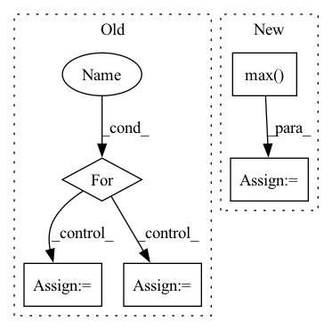

Pattern ID :19936

Before Change
inp = inp.reshape(ctx.dims.batch, -1, *[ctx.dims.spatial_mixing_kernel] * max_dims, ctx.dims.features)
original_dims = "".join(chr(ord("a") + i) for i in range(inp.ndim))
for i, wgt in enumerate(weights):
new_dims = original_dims[:i + 2] + "z" + original_dims[i + 3:]
reduced_dim = original_dims[i + 2]
if i > 0:
inp = activate(inp)
inp = jnp.einsum(f"{original_dims},{reduced_dim}z,{reduced_dim}z->{new_dims}", inp, wgt, mask)
return inp.reshape(original_shape)
After Change
original_shape = inp.shape
max_dims = math.floor(math.log(ctx.dims.sequence, ctx.dims.spatial_mixing_kernel))
batch = lax.max(ctx.dims.sequence // ctx.dims.spatial_mixing_kernel ** (depth % max_dims + 1), 1)
mask = jnp.logical_not(jnp.tri(ctx.dims.spatial_mixing_kernel, k=-1)) if ctx.model.autoregressive else 1
out = inp.reshape(ctx.dims.batch * batch, ctx.dims.spatial_mixing_kernel, -1, ctx.dims.features)
out = jnp.einsum("bkrf,kg,kg->bgrf", out, wgt0, mask)
out = activate(ctx, out)
out = jnp.einsum("bkrf,kg,kg->bgrf", out, wgt1, mask)
return out.reshape(original_shape)
In pattern: SUPERPATTERN
Frequency: 3
Non-data size: 5
Instances
Fragment ID: 64900606
Project Name: homebrewnlp/homebrewnlp-jax
Commit Name: acfb8d5fbb1ba8f6b7830832f913663e426b9d09
Time: 2022-09-01
Author: 39779310+ClashLuke@users.noreply.github.com
File Name: src/model/mixer.py
M Class Name: AnonimousClass
N Class Name: AnonimousClass
M Method Name: mix(3)
N Method Name: mix(2)
M Parent Class:
N Parent Class:
M File Name: src/model/mixer.py
N File Name: src/model/mixer.py
M Start Line: 14
M End Line: 32
N Start Line: 13
N End Line: 29
'>
Before Change
def test_rotation_covariance_vector(self, q, rv, rank, merge_fun, join_fun,
invar_mode, covar_mode):
errs = []
for scale in FLOAT_SCALES:
r, v = rv; r = r*scale; v = v*scale
rprime = rowan.rotate(q[None], r).astype(np.float32)
key = "rotation_covariance"
After Change
print(prediction1_prime)
print(prediction2)
print(np.max(np.square(prediction1_prime - prediction2)))
err = np.max(np.square(prediction1_prime - prediction2))
self.assertLess(err, 1e-5)
@settings(deadline=None)
@given(
'>
Fragment ID: 64900590
Project Name: klarh/geometric_algebra_attention
Commit Name: 549321f82c9b20c24ecf43b58cb03935d980e18e
Time: 2022-01-14
Author: mspells@vectorinstitute.ai
File Name: tests/test_internals.py
M Class Name: AllTests
N Class Name: AllTests
M Method Name: test_rotation_covariance_vector(8)
N Method Name: test_rotation_covariance_vector(8)
M Parent Class:
N Parent Class:
M File Name: tests/test_internals.py
N File Name: tests/test_internals.py
M Start Line: 141
M End Line: 164
N Start Line: 118
N End Line: 136
'>
Before Change
dace_module = DaceModule(module, backward=True)
dace_outputs = []
for inp, inp_src in zip(dace_inputs, input_values):
inp.copy_(inp_src)
inp.requires_grad = True
s = dace_module(inp).sum()
s.backward()
dace_outputs.append(inp.grad.clone().detach())
print(dace_outputs[-1])
After Change
dace_input.requires_grad = True
if use_max:
s = module(pytorch_input).max()
else:
s = module(pytorch_input).sum()
s.backward()
'>
Fragment ID: 64900629
Project Name: spcl/daceml
Commit Name: 682aea4a22edc4a5268188596bcf443bd041a0a7
Time: 2021-03-01
Author: oliverrausch99@gmail.com
File Name: tests/autodiff/pytorch/test_pytorch.py
M Class Name: AnonimousClass
N Class Name: AnonimousClass
M Method Name: run_pytorch_module(3)
N Method Name: run_pytorch_module(2)
M Parent Class:
N Parent Class:
M File Name: tests/autodiff/pytorch/test_pytorch.py
N File Name: tests/autodiff/pytorch/test_pytorch.py
M Start Line: 13
M End Line: 45
N Start Line: 10
N End Line: 44